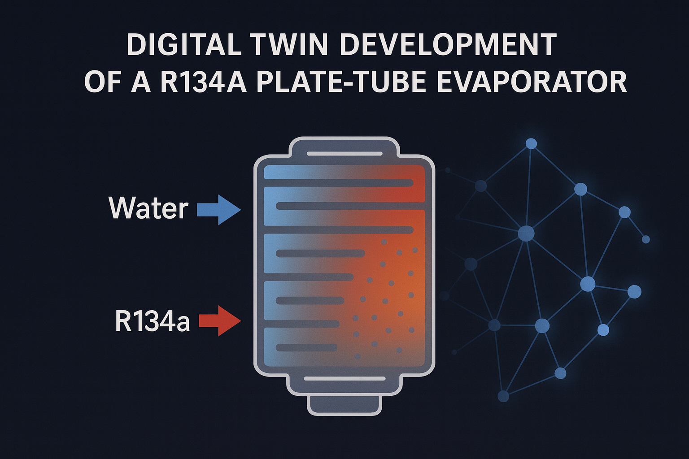
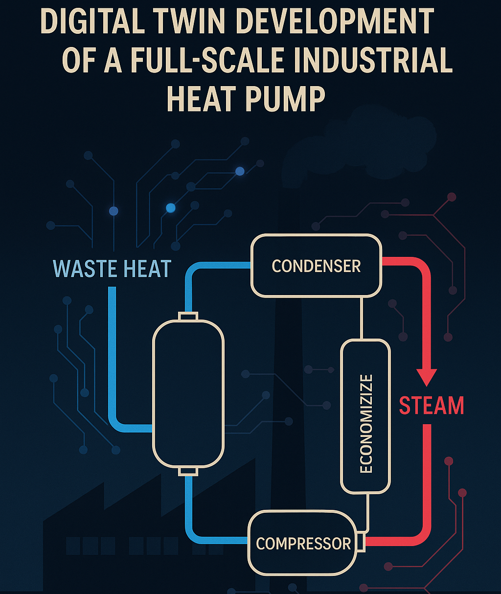

This project introduces a machine-learning framework to develop digital twins of evaporators—critical components in heat pump systems.
A plate-tube evaporator using R134a refrigerant is modeled within a single-stage heat pump that recovers heat from wastewater. The approach combines
high-fidelity unsteady CFD simulations with nonlinear regression to capture transient heat transfer behavior. Five independent variables are considered:
refrigerant and water inlet velocities and temperatures, and evaporation pressure. The model targets three key outputs: heat transfer coefficients on both
fluid sides and the refrigerant outlet dryness fraction. Training data is generated using Latin Hypercube Sampling across the input space, with each case solved
using RANS equations coupled with the Volume of Fluid (VOF) method to capture phase change in the 3D domain. Gaussian Process Regression models are then trained
on this dataset to create accurate, time-resolved surrogate models representing the system’s dynamic behavior.

This project built a data-driven digital twin of a 1 MW industrial heat pump to predict component temperatures/pressures and KPIs (COP, heating duty) across operating conditions
for rapid design/optimization. Using Gaussian Process Regression trained on 55 steady-state points, it achieved ≤7% error and supported what-if analysis, indicating ~3.8–4.2-year
payback and 250–1000 t/year CO₂ reduction. I performed the ML/data work end-to-end—data cleaning, feature engineering, model tuning, and delivery of a reproducible Python workflow.

The Pomodoro Technique is a time management method designed to improve focus and
productivity by breaking work into short, timed intervals called "Pomodoros,"
separated by short breaks. Developed by Francesco Cirillo in the late 1980s,
this technique helps manage distractions and maintain high levels of
concentration.

The Flashcard Technique is a learning method that uses cards with a question,
term, or problem on one side and the corresponding answer or explanation on the
other. This technique is highly effective for memorization, self-testing, and
active recall, which are essential for retaining information over the
long term.

With this project, it is possible to prepare a playlist for a specific time and
style in the Spotify application.

This project was created by using BeatifulSoup available in Python, is used to
track any specific item sold in Amazon website. The program alert the user/buyer
when any discount happens on the price of the item.